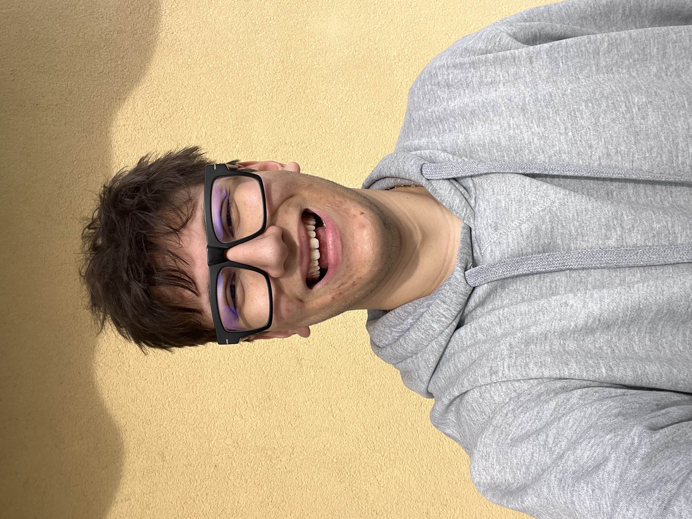
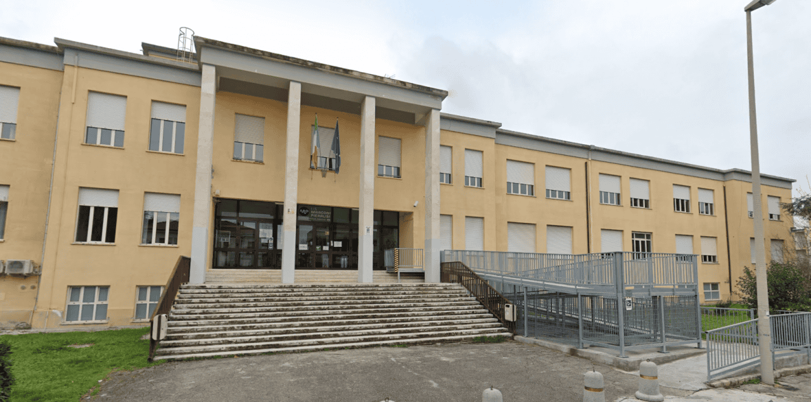
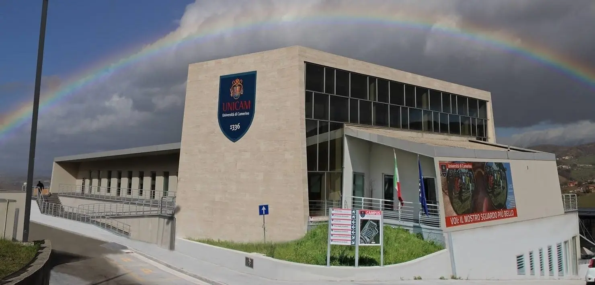
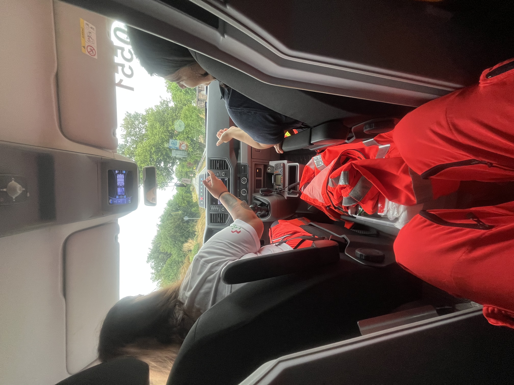
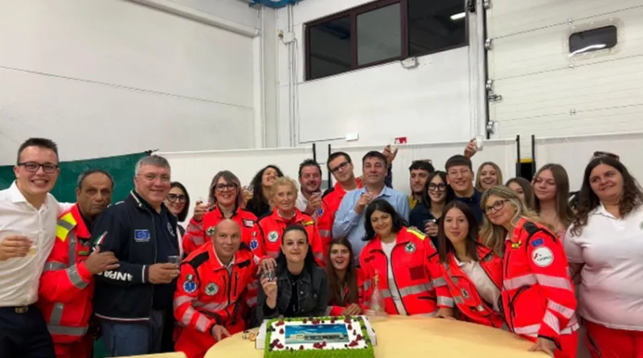
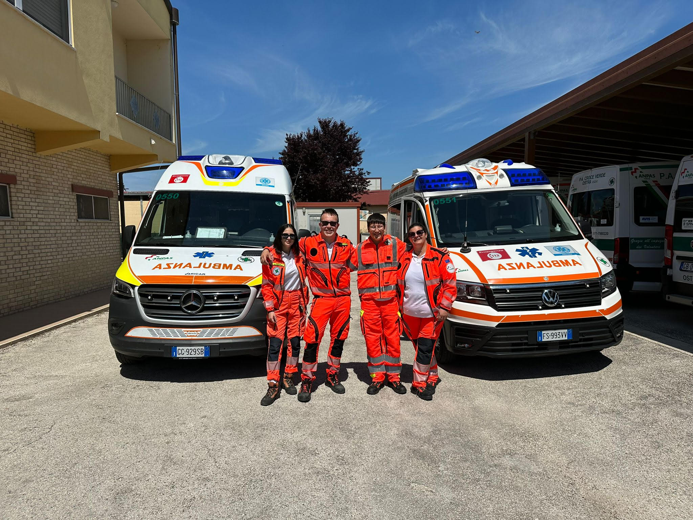
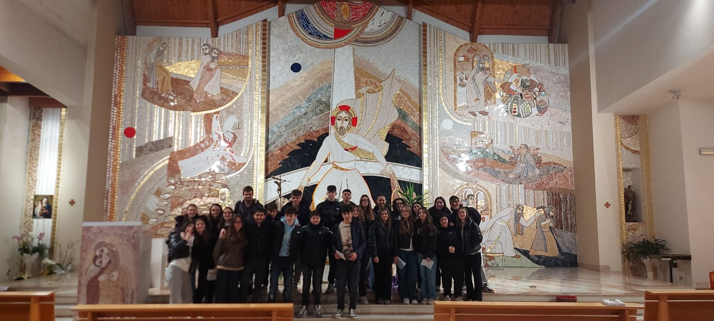
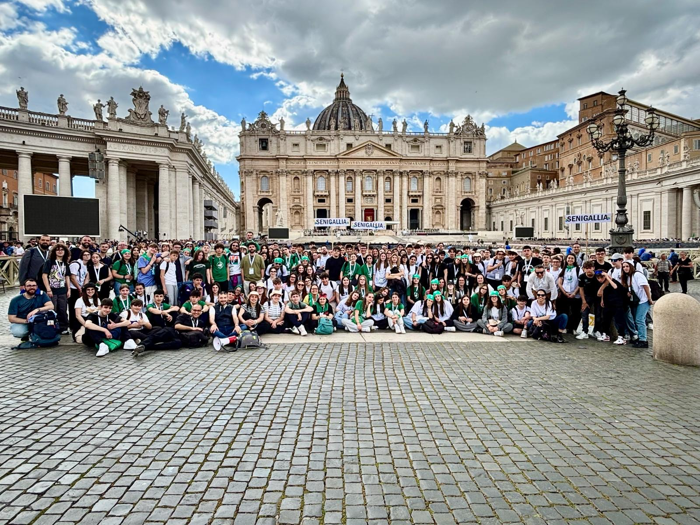
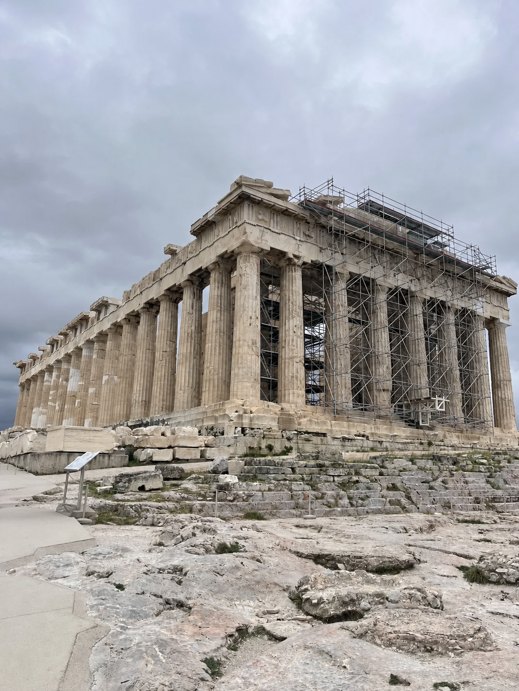

Emanuele Ruzziconi
Studente di Informatica — IIS Marconi Pieralisi, Jesi
Scuola, passioni e progetti: quello che ho costruito in cinque anni.

Chi sono
Ho 18 anni e vivo a Ostra, in provincia di Ancona. Sono una persona curiosa, con tanti interessi diversi: quello che mi spinge di più è il desiderio di capire come funzionano le cose, perché succedono, cosa c'è dietro. Lo studio per me non è un obbligo, è un modo per alimentare questa curiosità. Mi interesso tanto al mondo che mi circonda, agli eventi del presente ma anche a quelli del passato, perché credo che conoscere sia il modo migliore per orientarsi.
Il mio percorso di studi
Ho frequentato le scuole elementari e secondaria di primo grado nel mio paese, poi ho scelto l'IIS Marconi Pieralisi di Jesi perchè... non lo so bene. All'inizio sembrava la scelta giusta, ma mantenerla nel tempo non è stato semplice. Durante il biennio mi sono ritrovato ancora più confuso: materie come fisica, chimica e biologia mi appassionano molto, e per un periodo ho pensato di trasferirmi al liceo scientifico.
Poi è arrivato il triennio, con le materie tecniche, e il terzo anno è stato un vero salto nel vuoto. Programmazione, reti, progettazione software, non me lo aspettavo. E invece è stata una fortuna, perché scoprire di ragionare su quel tipo di problemi mi ha dato una direzione. Meno bene con le attività manuali, smontare o montare computer non è decisamente il mio forte.
Affronto le sfide scolastiche con impegno e, dopo il diploma, probabilmente mi iscriverò a Matematica a Camerino, anche se non voglio abbandonare del tutto le materie umanistiche. La soluzione che ho trovato è semplice: portarmele dietro attraverso la lettura.
Uno sguardo al futuro
Il futuro fa un po' paura, e le scelte che si avvicinano non sono da meno. Dopo cinque anni, questa scuola non è più solo una scuola, è diventata casa, e l'idea di lasciarla non è semplice. Ma al dopo bisogna pensare.
Il mio sogno, quello che porto con me da quando ero piccolo, è entrare nel mondo dell'istruzione: diventare insegnante, e trasmettere le mie passioni a chi verrà dopo di me.
Riflessione
Ebbene si Manu siamo arrivati alla fine. A pochi giorni dalla fine di questo anno scolastico e dalla fine di questo meraviglioso percorso voglio dire: "Bravo!". Si bravo a me stesso, perché difficilmente sono contento di ciò che faccio ma questa volta devo essere fiero di me e di ciò che ho fatto. Oltre a "Bravo!" non posso non dire "Grazie!". Grazie a tutti quelli che mi sono stati a fianco: la mia famiglia che mi ha sempre supportato, i miei compagni di classe che hanno creato l’ambiente giusto e sereno, i professori, i collaboratori scolastici che sono stati come degli “zii”, perché con loro mi sono sfogato, con loro ho scherzato, con loro mi sono sentito a casa; un ringraziamento a tutte le persone che lavorano in questa scuola, dalla segreteria, all’ufficio tecnico ai tecnici di laboratorio perché una loro chiacchiera e un loro sorriso mi ha cambiato le giornate.


Passioni
Volontariato in Croce Verde di Ostra
Dedicare il proprio tempo libero a stare vicino a chi ha bisogno riempie il cuore di sorrisi, gioia e gratitudine. Anche nei momenti più difficili, le persone che assistiamo durante i servizi riescono a farti capire quanto la tua presenza sia importante per loro. In questi quattro anni di volontariato ho conosciuto molte storie diverse, tutte accomunate da un filo rosso: nei momenti difficili abbiamo tutti bisogno di qualcuno accanto.



Educatore
Da diversi anni trascorro vari momenti significativi con la parrocchia. Attualmente seguo un gruppo di seconda superiore da 4 anni e abbiamo avuto numerosi momenti di condivisione, incontrandoci circa due giorni al mese, oltre a diverse uscite insieme durante l'anno. La cosa più bella di questa esperienza è riuscire a dare un aiuto concreto e un consiglio sincero a ragazzi di soli 3 anni più piccoli, attraverso testimonianze dirette e personali. Riesco così a essere per loro un punto di riferimento, un supporto nei momenti difficili e, soprattutto, un amico.

Chiesa Santa Maria della Neve e San Rocco, Gruppo seconda superiore

Giubileo degli adolescenti, 26 aprile 2025
Viaggi
La passione per i viaggi nasce dalla curiosità di scoprire e conoscere nuove culture, tradizioni e architetture. Ogni viaggio è un'opportunità per arricchirsi interiormente, allargare i propri orizzonti e tornare a casa con uno sguardo sul mondo diverso da quello con cui si era partiti. Scoprire , meravigliarsi e lasciarsi cambiare da ciò che si incontra è uno dei modi più profondi per vivere nella bellezza.
Belgio 2023

Grecia 2026